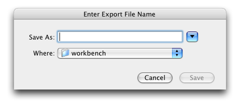

The WorkBench can export an entire Data Set item from the Sidebar or all or partial records from an open Data Set in the Workspace.
The fastest way to export an entire Data Set is to 'drag and drop' the Data Set item onto the 'Export Data Set' action in the Sidebar. This eliminates the need to choose a Data Set from a file dialog.
Or, Click 'Export Data Set' in the Sidebar. The following dialog will appear listing the unopened Data Sets:
Export Data Set
Choose a Data Set in the list and click 'OK'.
Next, name and save the export file using the following dialog:

Enter Export File Name
Select a location and enter a name for the new MS Excel file and click 'Save'.
To export partial records, choose the records by selecting a leastone column in the desired row. To export all the records in the Data Set do not select any records.
Click the  (Export Data Set) button on the Workspace Item Bar. The following dialog will appear:
(Export Data Set) button on the Workspace Item Bar. The following dialog will appear:
Enter Export File Name
Select a location and enter a name for the new MS Excel file and click 'Save'.